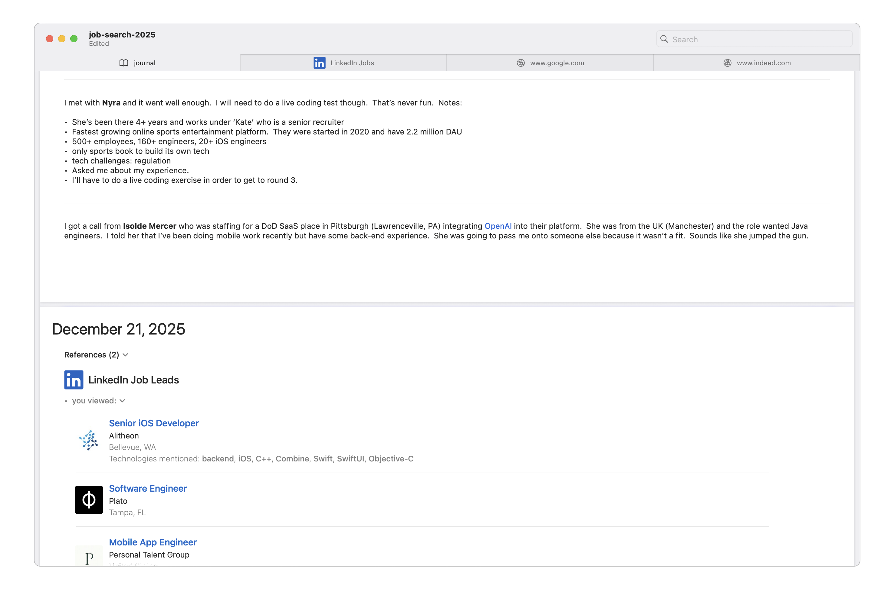

Evolve your software job search
The tech industry is not for the weak. Our skills are depreciating faster than ever before and the competition to find new roles is higher than almost every other industry. We’ve all embraced the need to plan our careers carefully, learn constantly, and adapt quickly to succeed. When you leave the certainty of one job in search of another, why should your methodology be any different?
Download devjob.plan (DJP) from the macOS App Store to organize and support your job change by tightly integrating journaling, discovery, and analytics—turning fragmented research into a disciplined, evolving process.

Journaling
Great software is built with objective intentions and a successful job search is no different. Version control, defect tracking, A/B testing, and other engineering pillars share the intent of accurately tracking history, learning from it, and making iterative improvements to ship. DJP adapts this idea to job search by building upon a specialized journal that captures both freeform text and as much historical data about your progress as possible.
The journal is your single source of truth—always the first tab, organized as daily entries with scannable topics for notes on recruiter calls, applications, interviews, or reflections. You edit with markdown via a familiar toolbar or direct syntax, much like writing commit messages or documentation in a repo. This keeps entries clean, structured, and searchable without sacrificing speed, ensuring every detail is included in your document, ready for review, iteration, or recall when refining your strategy. Over time, discovery and analytics automatically feed structured data back into this journal, turning your manual notes into a growing, data-rich timeline of your entire search.

Discovery
When engineers tackle a new codebase or debug a tough issue, we don’t just guess—we search, explore dependencies, follow leads, and keep context so we can retrace steps later. Job discovery works the same way: scattered sites, fleeting tabs, and forgotten searches make it easy to lose momentum. DJP turns this into a disciplined process by combining a single contextual search bar with persistent web tabs that live alongside your journal.
Type a term like “senior iOS engineer remote” and relevant actions will be displayed—search your existing journal entries, open LinkedIn Jobs, or run a Google search—each in its own tab that restores exactly as you left it across sessions. Browsing happens in familiar web views, but everything stays in one window with the journal always one click away.
When a result stands out, you can switch instantly to the journal tab and add a topic while the posting is still visible—capturing thoughts, links, or details exactly when they’re fresh, without leaving the app or losing your place.

Analytics
Engineers rely on data to make decisions—metrics, logs, and trends turn guesswork into repeatable success. The same applies to job searching: knowing which technologies appear most often or which postings you’ve actually reviewed helps you iterate faster and spot real opportunities. DJP begins this process by automatically capturing structured references as you browse.
Whenever you view a job posting on LinkedIn Jobs or run a Google search from the Discovery bar, key details will be extracted and saved—job title, company, location, and mentioned technologies—directly into collapsible reference sections at the top of each day’s journal entry. These references are fully searchable, link back to the original sources, and accumulate naturally as you work.
This lightweight dataset grows into an honest record of your market exposure without any manual logging, forming the foundation for deeper insights as your search continues.

Land your best job
The industry is a lot different than it was even five years ago. It is no longer sufficient to have picked up a hot technology, sent out a handful of resumes, and still expect your choice of offers. Now with AI interviewing us and even small companies building software at massive scale, the goalposts for our skills move miles farther every year.
If you agree that your job search deserves the same rigor as your code, you could cobble something together with Notes, Safari, and Numbers…
Or just use your devjob.plan and get back to coding.
Your choice.